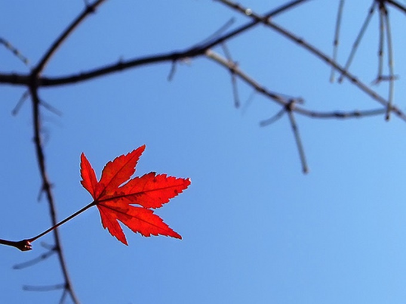

Trong một quận nhỏ phia đông Washington, các con đường chạy ngoằn nghoèo một cách điên dại, cắt quãng thành những dải nhỏ gọi là “vùng”. Những “vùng” này lọt thỏm trong những góc và đường cong lạ kì. Một con đương cắt ngang với chính nó một, hai lần. Một hoạ sĩ đã có lần khám phá là con đường có thể có giá. Ví dụ như khi một nhân viên thu ngân cầm hoá đơn của mầu vẽ, giấy và vải, sau khi đi dọc theo đường này bỗng thấy mình đã đi vòng lại chỗ cũ mà không hề thu được một xu nào cả! Thế nên đám hoạ sĩ chẳng bao lâu đã kéo đến phường Greenwich, săn lùng phòng cho thuê có cửa sổ thông ra hướng bắc, góc mái kiểu thế kỷ 18, gác lửng kiểu Hà Lan, và giá thuê lại rẻ. Sau đấy họ mang vào vài lọ hợp kim thiếc, một hai cái chảo nấu ăn dã chiến, và thế là một “quần cư” thành hình. Hai cô Sue và Johnsy cùng thuê chung một căn phòng đơn giản ở tầng trên cùng của một toà nhà ba tầng lụp xụp. “Johnsy” thực ra là tên thân mật của California. Họ đã gặp nhau tại một hiệu ăn trên đường Số Tám, và khám phá ra là họ có những sở thích tương đồng về nghệ thuật, rau diếp xoắn trộn dấm, và thời trang với tay áo giám mục. Thế là họ cùng thuê chung một căn phòng. Đấy là vào tháng 5. Vào tháng 11, có một kẻ ngoại nhập mang theo giá lạnh nhưng vô hình, mà các bác sĩ gọi là Viêm Phổi, rình rập trong “quần cư”, móng vuốt giá băng quệt vào đây đó. Tên giặc đã ngang nhiên hoành hành khu phía đông, hạ gục nhiều nạn nhân, nhưng hắn chỉ mới đặt chân chầm chậm qua các lối ngõ như bàn cờ của mấy “vùng” nhỏ hẹp phủ đầy rêu. Bạn sẽ không xem Thần Viêm Phổi như một quân tử già đầy hào hiệp. Người con gái nhỏ vốn đã mất máu vì những trận gió ở California thì lẽ ra không đáng cho một kẻ bất tài già nua bận tâm đến. Nhưng hắn đã tấn công Johnsy. Thế là cô nằm bẹp, không mấy cử động, trên chiếc giường sắt, xuyên qua khung cửa sổ kiểu Hà Lan nhìn ra bức tường trơ trụi của căn nhà gạch kế bên. Một buổi sáng, vị bác sĩ đầy bận rộn mời Sue ra hành lang. Ông đang vẩy cái nhiệt kế thăm bệnh để mực thuỷ ngân trong đó hạ xuống. - Cơ may khỏi bệnh của cô ấy áng chừng chỉ một phần mười. Và cơ may này là tuỳ vào việc cô ấy có ý chí muốn sống hay không. Với cách con bệnh chỉ ngóng chờ công ty mai táng đến thì sách thuốc nào cũng vô dụng. Cô bạn nhỏ của cô đã bị ám ảnh là cô ấy sẽ không qua khỏi. Cô ấy có ý định gì không? - Chị ấy... chị ấy muốn có ngày nào đó vẽ tranh phong cảnh vịnh Naples. - Vẽ tranh à? Thật là điên rồ! Cô ấy có bận tâm nặng nề về việc gì không, chẳng hạn về một người đàn ông nào đó? Cô Sue khịt mũi: - Một người đàn ông à? Một người đàn ông thì có thể... mà không, bác sĩ ạ, không có chuyện như thế. Vị bác sĩ nói: - Thế thì là do cô ấy quá yếu rồi. Tôi sẽ cố làm mọi cách mà khoa học cho phép. Nhưng mỗi khi con bệnh của tôi bắt đầu nhẩm tính số lượng xe trong chuyến đưa đám của họ thì xem như hiệu lực của thuốc men chỉ còn một nửa. Nếu cô có cách khiến cho cô ấy hỏi han cô về thời trang mùa đông thì tôi có thể đoán chắc cơ may là một phần năm, thay vì là một phần mười. Sau khi vị bác sĩ đi khỏi, Sue đi vào phòng vẽ và khóc cho đến khi cái khăn giấy Nhật tơi tả thành bột giấy. Rồi cô đường bệ đi vào phòng của Johnsy với cái giá vẽ, miệng huýt sáo một điệu dân ca Mỹ rộn ràng. Johnsy vẫn nằm bẹp, xem chừng không động đậy chút nào dưới tấm vải giường, mặt hướng về cái cửa sổ. Sue ngưng huýt sáo, nghĩ là bạn mình đang ngủ. Cô sắp xếp giá vẽ và bắt đầu dùng viết và mực để vẽ hình minh hoạ cho một truyện để đăng trong một tạp chí. Trong khi các hoạ sĩ trẻ tuổi phải dọn đường cho Hội Hoạ bằng cách vẽ tranh cho truyện ấy để dọn đường cho Văn Chương. Khi Sue đang phác hoạ cái quần bảnh bao và gọng kính một tròng của một anh hùng (một tay cao bồi bang Idaho), cô nghe một tiếng nho nhỏ, lặp lại vài lần. Cô đi vội đến bên mép giường. Johnsy đang mở mắt, nhìn ra cửa sổ, và đang đếm, đếm ngược: “mười hai”, và ít lâu sau: “mười một”, và sau đấy “mười”, rồi “chín”, rồi “tám” và “bảy” gần như liền nhau. Sue nhìn chăm chú bên ngoài cửa sổ. Có gì ở ngoài đấy đâu mà đếm? Chỉ có một khoảng sân trống buồn nản, và bức tường trơ trụi của một căn nhà gạch xa hơn chừng mười thước. Một dây thường xuân thật già cỗi, gốc vặn vẹo mục nát, leo đến giữa bức tường gạch. Ngọn gió thu lạnh đã làm rơi rụng đám lá, phơi bầy các nhánh gần như trơ trụi bám vào mấy mảng gạch vụn vỡ. Sue hỏi? - Cái gì vậy hở bồ? Johnsy nói, gần như thì thầm: - Sáu. Bây giờ rơi nhanh quá. Ba ngày trước còn gần cả trăm, đếm muốn nhức đầu. Nhưng giờ thì dễ rồi. Thêm chiếc nữa. Giờ chỉ còn lại năm. - Năm cái gì, nói cho Sue của bồ nghe nào! - Năm chiếc lá. Trên cây thường xuân. Khi chiếc lá cuối cùng rụng thì mình cũng sẽ ra đi. Mình đã biết như thế ba ngày nay rồi. Bác sĩ không nói cho bạn biết à. Sue càu nhàu, với giọng khinh miệt cao quý. - Ô hay! Mình chưa bao giờ nghe có chuyện điên khùng như vậy. Mấy cái lá thường xuân thì có liên hệ gì đến việc bồ khỏi bệnh đâu nào? Và bồ vẫn thích cái cây này, cô nàng hư đốn ơi! Đừng có ngốc nghếch. Sáng nay ông bác sĩ nới với mình là cơ may của bồ khỏi bệnh hẳn... xem ông ấy nói gì nào... ông ấy nói cơ may chính xác là mười trong một! Đấy cũng bằng với cơ may chúng mình có ở New York để đáp tầu điện hay đi qua một toà nhà mới. Bây giờ ăn một tí cháo, rồi mua ít rượu vang porto cho cô bé đang bệnh, và thịt lợn cho chính tác giả ăn. Johnsy vẫn dán mắt ra ngoài cửa sổ: - Không cần phải mua rượu vang. Thêm một chiếc nữa. Không, mình không muốn ăn cháo. Thế là còn có bốn. Mình muốn xem chiếc lá cuối cùng trước khi trời tối. Khi ấy mình cũng sẽ ra đi. Sue nghiêng mình trên cô: - Johnsy ơi, bồ có thể hứa nhắm mắt lại và không nhìn ra ngoài cửa sổ khi mình làm việc được không? Ngày mai mình phải đi giao mấy bức vẽ. Mình cần ánh sáng, nếu không mình phải kéo rèm xuống. Johnsy hỏi, giọng lạnh tanh: - Bạn có thể vẽ trong phòng kia được không? - Mình muốn ở kề bên bồ. Hơn nữa, mình không muốn bồ cứ nhìn mãi mấy chiếc lá thường xuân vô duyên đó. - Cho mình biết khi nào bạn làm xong, vì mình muốn xem chiếc lá cuối cùng rụng xuống. Mình chán chờ đợi rồi. Mình chán suy nghĩ. Mình muốn buông xuôi tất cả, và thả người trôi xuống, xuống nữa, như là một trong mấy chiếc lá mệt mỏi kia. Johnsy nhắm mắt lại, mặt tái nhợt, năm yên như la một cái tượng bị sập đổ. - Ráng ngủ đi. Mình muốn kêu ông Behrman lên để ngồi mẫu cho mình vẽ một ông thợ mỏ già cô độc. Mình chỉ đi một phút. Đừng cựa quậy cho đến khi mình trở lại. Ông già Behrman là một hoạ sĩ sống ở tầng trệt bên dưới phòng của họ. Ông đã quá sáu mươi, và có một chòm râu rậm như ông Moses hiện thân trên bức điêu khắc của Michael Angelo. Behrman là cả một sự thất bại trong nghệ thuật. Trong bốn mươi năm ông vung vẩy chiếc cọ mà không hề chạm gần đến vạt áo của Người Tình. Ông luôn luôn muốn vẽ nên một kiệt tác, nhưng chưa bao giờ bắt đầu. Trong vài năm nay ông không vẽ được gì ngoại trừ thỉnh thoảng ít nét quấy quá cho giới thương mại và quảng cáo. Ông kiếm tiền chút đỉnh bằng việc ngồi làm mẫu cho các hoạ sĩ trẻ trong quần cư khi họ không muốn trả theo giá của người mẫu chuyên nghiệp. Ông uống rượu gin lu bù, và vẫn nói đến kiệt tác sắp đến của ông. Còn lại thì Behrnam là một ông già nhỏ thó nhưng dữ tợn, hay chửi như té tát người nào tỏ ra yếu đuối, và xem mình như là con chó giữ nhà để bảo vệ cho hai hoạ sĩ trẻ sống ở tấng trên. Sue tìm gặp Behrman khi ông nồng nặc mùi rượu dâu trong căn phòng nhỏ tối tù mù. Trong một góc là cái giá vẽ với khung vải trống trơn, suốt hai mươi lăm năm vẫn chờ đợi đường nét đầu tiên của một kiệt tác. Cô nói cho ông nghe về chuyện hão huyền của Johnsy, về việc cô nàng – quả thật nhẹ tênh và mỏng manh như một chiếc lá - sẽ trôi đi khi sự bám víu của cô vào trần thế vốn đã yếu sẽ yếu thêm. Ông già Behrman, với cặp mắt đỏ sòng sọc, lớn tiếng kinh thường và chế diễu cho những điều tưởng tượng ngốc nghếch: - Khốn khổ! ở đời sao lại có người ngu xuẩn muốn chết vì mấy cái lá rụng từ một dây leo vô duyên như vậy? Tao chưa bao giờ nghe có chuyện này. Không tao sẽ không ngồi làm mẫu cho một đứa ẩn cưa ngu ngốc như mày. Tại sao mày lại để ý tưởng khùng điên đấy đi vào đầu của nó? Ôi dào, cái con nhỏ Johnsy khốn khổ! - Chị ấy đang yếu lắm, và cơn sốt làm cho đầu óc chị ấy trở nên bệnh hoạn đầy những mơ tưởng kỳ quái. Được rồi, nếu ông không muốn ngồi làm mẫu cho tôi cũng được. Nhưng tôi nghĩ ông là một ông già xấu tính – già vô tích sự. Ông Behrman tru tréo lên: - Mày đúng là đàn bà! Ai bảo tao không muốn ngồi làm mẫu? Đi lên đi. Tao sẽ đến. Cả nửa giờ đồng hồ rồi tao đã nói là tao sẵn sàng ngồi. Trời ơi! Đây không phải là chỗ cô Johnsy có thể năm bẹp dưỡng bệnh được. Một ngày nào đấy tao sẽ vẽ nên một kiệt tác, và bọn mình sẽ rời đi nơi khác. Trời ơi! Đúng là phải như thế. Johnst đang ngủ khi họ lên. Sue buông cái rèm cửa xuống, ra dấu bảo Behrman đi vào phòng kia. Trong đấy, xuyên qua khung cửa sổ họ nhìn dây thường xuân với nỗi lo sợ. Rồi họ nhìn nhau một lúc, không nói lời nào. Một cơn mưa giá lạnh đang ập xuống dai dẳng, pha cùng với tuyết. Trong chiếc áo xanh cũ kỹ, Behrman ngồi làm mẫu, giả làm một thợ mỏ ẩn cư, ngồi trên một cái ấm lật ngược giả làm một tảng đá. Khi Sue thức giấc vào buổi sáng sau giấc ngủ kéo dài một giờ, cô thấy Johnsy đang vô hồn nhìn cái rèm màu sậm đã buông xuống. Johnsy thì thào: - Kéo rèm lên. Mình muốn nhìn. Sue mệt mỏi làm theo bạn. - Nhưng xem kìa! Sau trận mưa vùi dập và những cơn gió xoáy dữ tợn suốt một đêm dài, vẫn còn một chiếc lá thường Xuân dựa trên bức tường gạch. Đấy là chiếc lá cuối cùng. Vẫn còn có mầu xanh thẫm gần cuống, nhưng với phần rìa te tua pha mầu vàng của sự tàn tạ, chiếc lá vẫn dũng cảm bám vào cái cành cao dăm bảy mét cách mặt đất. Johnsy nói: - Đấy là chiếc lá cuối cùng. Mình nghĩ chắc chắn nó đã rụng đêm qua. Mình nghe tiếng gió. Nó sẽ rụng hôm nay, và mình sẽ chết cùng lúc với nó. Sue nghiêng khuôn mặt tóp của cô kề cận cái gối: - Cưng ơi là cưng! Nếu cưng không nghĩ đến chính bản thân cưng thì nên nghĩ đến mình đây. Mình sẽ làm được gì chứ? Nhưng Johnsy không trả lời. Nỗi cô đơn cùng cực nhất trên thế gian là một linh hồn chuẩn bị tiếp tục cuộc hành trình bí ẩn, xa thẳm. Điều mộng tưởng dường như đã ảm ảnh cô mạnh mẽ hơn khi những dây nối buộc cô với tình bạn và với trần thế đã bị lơi lỏng. Ngày dần trôi, và dù qua khoảng không xám xịt, họ vẫn thấy chiếc lá đơn độc bám vào cuống của nó, dựa vào bức tường. Và rồi, khi màn đêm buông xuống, gió bắc lại thổi, trong khi mưa vẫn đập vào các cửa sổ, chảy ồng ộc xuống theo rìa mái nhà kiểu Hà Lan. Khi đã có đủ ánh sáng buổi tinh sương, Johnsy, con người vô cảm, lại ra lệnh kéo cái rèm xuống. Chiếc lá thường xuân vẫn còn đấy. Johnsy nằm một hồi lâu nhìn nó. Và rồi cô gọi Sue, đang quậy nồi cháo ga trên cái bếp ga. Cô nói: - Mình là đứa hư, Sue à. Có cái gì đó đã khiến chiếc lá vẫn ở đấy để cho thấy mình quả là độc ác. Muốn chết là một cái tội. Bây giờ bồ có thể mang cho mình chút cháo, và ít sữa pha chút rượu vang porto, và... không, mang trước cho mình cái gương soi cầm tay, rồi chèn ít cái gối quanh mình, rồi mình sẽ ngồi lên để xem bồ nấu nướng. Một giờ sau, cô nói: - Sue à, một ngày nào đấy mình sẽ vẽ cảnh vịnh Naples. Ông bác sĩ đến vào buổi xế chiều, và khi ông trở ra Sue có cớ để đi ra ngoài hành lanh. Ông nắm lấy bàn tay gầy, run rẩy của Sue đặt trong tay ông. - Cơ may ngang bằng. Với công chăm sóc tận tuỵ của cô, cô sẽ thắng. Và giờ tôi phải đến thăm một ca khác ở tầng dưới. Người bệnh là Behrman – tôi nghĩ chừng đâu là một hoạ sĩ. Cũng viêm phổi. Ông ta già cả, yếu đuối, cơn bệnh lại là cấp tính. Không có hi vọng gì, nhưng tôi sẽ đưa ông đến bệnh viện để được thoải mái hơn. Ngày kế, ông bác sĩ bảo Sue: - Cô ấy qua khỏi cơn nguy rồi. Cô đã thắng. Bây giờ chỉ cần dinh dưỡng và chăm sóc – chỉ có thế thôi. Buổi chiều ấy, khi Johsy đang đan một cái khăn quàng len mầu lam thật đậm và xem vẻ rất vô dụng, Sue đến bên giường cô, đặt cánh tay quanh cô và cũng quanh mấy cái gối. - Mình có chuyện này nói cho bồ biết, cái con chuột trắng ơi. Ông Behrman qua đời hôm nay ở bệnh viện vì chứng viêm phổi. Ông ấy nhuốm bệnh chỉ trong có hai ngày. Người gác dan tìm thấy ông sáng ngày đầu tiên trong căn phòng tầng dưới, ngất xỉu với cái chân đau đớn. Đôi giầy và quần áo ông ấy bị ướt cả, lạnh như nước đá. Họ không thể hiểu nổi ông đã đi đâu trong một đêm kinh hoàng như thế. Và rồi họ tìm thấy cái đèn bão, vẫn cháy, và một cái thang đã bị rời khỏi nơi cất giữ, vài cây cọ tơi tả, và nghiên mầu mới ít mầu xanh và vàng, bồ nhìn ra ngoài cửa sổ xem, nhìn chiếc lá thường xuân cuối cùng trên bức tường đấy. Bồ có đặt nghi vấn tại sao nó không bao giờ bay lất phất khi có gió thổi không? Cưng ơi, đó là kiệt tác của ông Behrman đấy - ông đã vẽ nó đúng vào đêm chiếc lá cuối cùng rơi rụng.
Truyện ngắn
Trang chủ>truyện ngắn>Chiếc lá cuối cùng
CHIẾC LÁ CUỐI CÙNG
Cùng một tác giả,
46 Tác phẩm
Ái tình theo khẩu phần
Bạn hữu ở San Rosario
Căn phòng đủ tiện nghi
Cánh cửa màu lục
Câu chuyện tỉnh lẻ
Cây xương rồng
Chiếc lá cuối cùng
Chuyện một tờ báo
Chuyến phà nhỡ nhàng
Con người hai mặt
...